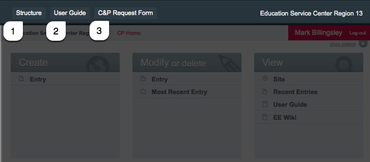
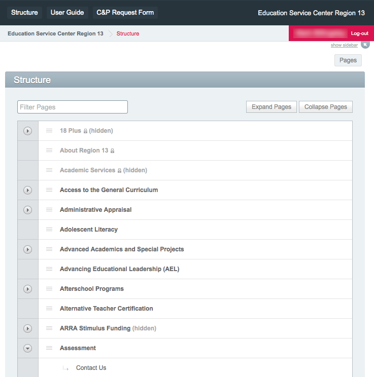
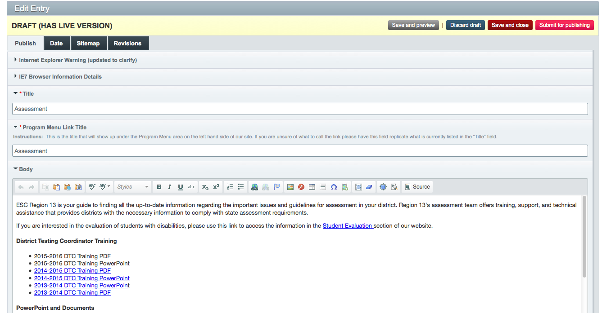

Our website is built with software called a content management system
or CMS for short. Our CMS is software which runs on our webserver so
there is no software to install on your computer to edit our website. If
you need access or training, open a communication and production (C&P) request.
Your center support team uses the same form for video requests, product requests, event marketing and web requests.
When you login to expression engine you'll see the default page for the control panel and a menu with three options:

Option #3 will open the communication and production
request form in another browser tab. If you run into trouble, open a
ticket and someone will respond ASAP.
More about C&P requests here.
Option #2 is this user guide. This document lives inside expression engine and can be updated just like other sub-sites on esc13.net.
Option #1 "Structure" Click on this link to see a list of all of esc13.net's sub-sites.

"Structure" provides the list of all our pages and sub-pages. Click on the page title to open it in the editor.
Structure allows us to have sub-pages or pages that belong with other pages. To see a list of sub pages click the icon.
If a page doesn't have this icon, it does not have sub pages.

From here you can edit your page's content using the editor tool bar.
Note about links and images.
Once your changes are complete, press the "submit for publishing" button to alert C&P to the change.
Changes are published in the morning, afternoon and end of day.
If you need something published sooner or at a specific time, please create a communication & production request.